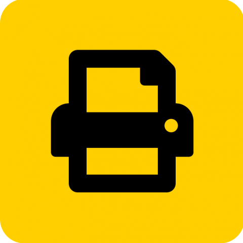

Resources for Students
NetID
The NetID is a username and password combination which allows access to
University services.
Learn More
WiFi
UW Oshkosh provides access to the internet and university resources via a
wireless network available on campus.
Learn More
TitanWeb
TitanWeb is the student information system portal at the UW Oshkosh where you
can register for classes, view grades and more.
Learn More

Equipment Checkout
We offer many types of equipment for checkout at the Student Technology
Center.
Learn More
Tech Centers
Technology Centers are conveniently located throughout campus to assist with technology issues,
questions and training.
Learn More